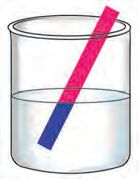
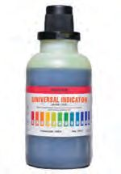
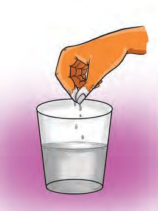
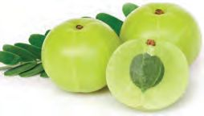
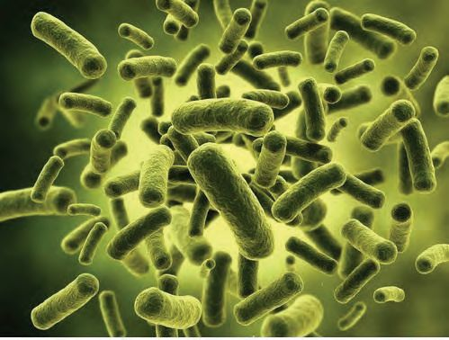

Our Science teacher usually
comes to the class with some
science experiments that
kindle the curiosity of the
children. Today the teacher
had brought two transparent
glass tumblers. One of them
contained a pink liquid. The
second tumbler was empty.
The teacher placed both the
tumblers on the table. She
asked me to pour the pink
liquid from the first tumbler
into the empty glass tumbler.
I did the same. And then,
something amazing happened!!
The pink liquid that was
poured into the second
tumbler turned yellow! We
were thrilled by this magic.
Page 28
Figure fig_ch02_p028_01 (Page 28)
Basic Science
Haven’t you read Jinu’s diary entry? What could be the secret behind the
experiment conducted by the teacher in Jinu’s class?
We need some materials for finding it. Let’s get them from the Science Kit.
Science Kit
You can collect many materials that are required to
conduct science experiments from your home and
surroundings. Science Kit is a collection of such
materials. Materials to be kept in the Science Kit to
conduct the experiments in this unit are transparent
glass tumblers, pink coloured water obtained by
water boiled with pathimugam, vinegar, tamarind
water, lemon juice, salt, ash, lime, baking soda and
buttermilk. You can expand your kit by adding more
materials required to conduct experiments in each unit.
Take out the glass tumblers from your Science Kit and arrange them on the
desk. Add two or three drops of vinegar, tamarind water, lemon juice, salt
solution, ash suspension and baking soda solution into separate tumblers.
Pour half a glass of pathimugam water into each tumbler. Does the water in
any of the tumblers turn yellow? What is your observation? Record it in your
Science Diary.
Now you know what the pink liquid mentioned in Jinu’s diary is.
In the experiment mentioned in Jinu’s diary, the teacher must have added
something to the second tumbler. Which among the following did the teacher
add to turn the pink liquid into yellow? Put a tick () mark on the appropriate
boxes, based on the experiment you have done.
●
Do the substances that turned
pathimugam water into yellow have
anything common in their taste?
They all have a sour taste. The sour
taste is due to the presence of some
acids in them. Let’s do some more
experiments to know the properties of
acids. Place everyone’s glass tumblers
on the desk. Fill half portion of each
glass with a different liquid from the
list given below.
●
Soap water
●
Lemon juice
●
Clear baking soda solution
●
Clear lime water
●
Vinegar
●
Buttermilk
●
Tamarind water
●
Clear ash suspension
For Further Reading
Litmus Paper
Litmus is a dye made from the
extract of lichens which grow on
trees, rocks etc. It helps to identify
the nature of substances by
changing their colour. The extract
of lichens is applied on paper to
make litmus paper and dissolved
in water to make a litmus solution.
Litmus papers and litmus
solutions of blue and red colours
are available in school laboratories.
Take blue and red litmus papers from the school laboratory. Dip blue and red
litmus papers in these liquids. Tabulate your observations in the Science
Diary.
29
Page 30
Figure fig_ch02_p030_01 (Page 30)

Figure fig_ch02_p030_02 (Page 30)
Basic Science
Colour Changes Observed
Liquid
Blue litmus
Red litmus
Vinegar
Lemon juice
Clear Lime water
Which liquids turned blue litmus into red?
●
Lemon juice
●
●
Which liquids turned red litmus into blue?
●
Lime water
●
●
Acids and Bases
Acids are substances that turn blue litmus into red.
Substances that turn red litmus into blue are bases.
Classify the liquids you have experimented into acids and bases. Record it in
the Science Diary.
Alternative for Litmus
Rub a red Hibiscus flower thoroughly on both sides of a white paper. What is
the colour of the paper now? This paper can be dried and cut into strips. It can
be used instead of blue litmus paper. Dip this paper in acidic liquids.
Didn’t the colour of the paper change? This
paper that turned red can be used instead of red
litmus paper. This paper can be tested on the
liquids in the Science Kit. Record your
observations in the Science Diary.
Indicators
Indicators are substances that help to identify acids and bases
by changing their colour. Litmus paper is an indicator.
Laboratory Indicators
In addition to the blue and red litmus papers that you
are now familiar with, two other indicators that are
commonly used in laboratories are Phenolphthalein
and Methyl Orange.
Observe the change in colour when two or three
drops of Phenolphthalein are added to various acids
and bases. Similarly, add two or three drops of Methyl
Orange in acids and bases and observe the change.
Tabulate the colour change.
Liquid Tested
Phenolphthalein
Methyl Orange
Vinegar
Clear Lime water
Lemon juice
Soap water
Clear baking soda
solution
• Which substances can be used as indicators of acids?
•
Which substances can be used as indicators of bases?
You have now realised that acids turn blue litmus into red and bases turn red
litmus into blue. Do they have any other common properties?
How do vinegar, lemon juice, buttermilk and tamarind taste?
31
Page 32
Figure fig_ch02_p032_01 (Page 32)

Figure fig_ch02_p032_02 (Page 32)

Figure fig_ch02_p032_03 (Page 32)
Basic Science
For Further Reading
Universal Indicator
Have you ever happened to taste soap while
taking bath? How does it taste? Soap and
baking soda taste the same. They have an
alkaline taste. Soap is basic in nature.
All acids have sour taste.
All bases have alkaline taste.
Universal indicator is
used to identify both
acid and base. It is a
mixture of many
indicators. When a few
drops are added to acids
or bases, it gives
different colours
according to their nature
and concentration. It can
be determined by
comparing with the
colour chart on the
bottle.
Dip your fingers in each liquids in the Science
Kit and rub the fingers as shown in the picture.
Which liquids feel slippery? List them.
• Soap water
• Baking soda
solution
•
Which common
property of bases did
you identify here?
You have now
identified the common properties of acids
and bases. Tabulate them.
You have tested and found out some
substances that turn blue litmus red.
Which among the following substances can
turn blue litmus red? List them.
Behind the Name
‘Acidus’ is the Latin word
for sour taste. The term acid
is derived from this.
• Orange juice
• Rice soup
• Black tea
• Bilimbi (Irumban puli) juice
• Grape juice
• Tomato juice
• Coconut water
Bilimbi
ST-275-3-BASIC SCI. (E)-7-VOL-1
In my opinion, liquids that
can turn blue litmus red
Reason
Experiment and check whether your assumptions are right.
Acids in Food Items
All food items with sour taste have acids
in them. Most fruits contain more than
one acid.
Let’s get familiar with some acids that are
found in food items.
33
Page 34
Figure fig_ch02_p034_01 (Page 34)

Figure fig_ch02_p034_02 (Page 34)

Figure fig_ch02_p034_03 (Page 34)
Basic Science
For Further Reading
Acid in Gooseberry!!
You have learnt that
gooseberries are rich in
Vitamin C. Vitamin C is
Ascorbic acid. The sour
taste of gooseberry is due
to the presence of
ascorbic acid.
Food item
Main acid present
Buttermilk,
Curd
Lactic acid
Vinegar
Acetic acid
Lemon
Citric acid
Tamarind
Tartaric acid
Apple
Malic acid
Gooseberry
Ascorbic acid
Tomato
Oxalic acid
When Milk Curdles
Curd is a food product made from milk. What is the reason for the sour taste
of curd?
You know that sour taste indicates the
presence of acid.
Lactobacillus bacteria
How does milk turn acidic when it
becomes curd? Don’t we add a little curd
to the milk which is boiled and cooled in
order to turn it into curd? Curd contains a
bacteria called Lactobacillus. The lactic
acid that is produced when these bacteria
nourish themselves with milk, gives curd
its sour taste.
Acids and Bases in Laboratories
Acids in food items are weak. But many acids and bases commonly used in
laboratories are strong. Let's get familiar with some acids and bases used in
laboratories.
Acid Spill Causes Eye Injury
Anakkayam: A rubber tapping worker suffered severe eye injury due
to acid spill. The accident occurred when he was trying to open a tin
containing formic acid used for thickening latex.
Have you read the above news? Many chemical substances are dangerous.
Yet we have to use them for various industrial and experimental purposes.
What precautions should we take to avoid accidents while handling chemicals?
•
Avoid spilling on body parts
•
Don't touch with hands
•
Don't smell
•
Don't taste
•
Use a dropper while taking out
acid from a bottle
•
Use a holder while using a test tube
For Further Reading
Ant Bite
If Acid Spills
Strong acids can absorb water and
liberate heat. They can cause burns if
they get spilled on the body. Pouring
cold water on the affected area for a
long time is the first aid for this. If the
burn is severe, the person should be
taken to hospital.
35
There is formic acid in the body
of ants. When ants bite, this acid
enters our body. This reacts
with human body and this is
why ant bite causes pain.
So far, you have done experiments using acids and bases found in household
items. Now let’s do experiments by diluting some acids and bases in the
laboratory.
•
Which acids and bases can be taken?
•
Which indicators are to be taken?
Take acids and bases in separate test tubes. Observe and tabulate the colour
changes that occur when various indicators are added to them.
Colour change on adding indicators
Indicators
Hydrochloric
acid
Sulphuric
acid
Sodium
hydroxide
Potassium
hydroxide
Methyl Orange
Phenolphthalein
Blue litmus paper
Red litmus paper
For Further Reading
Stomach
Acid in the Body?
Hydrochloric acid is produced in the stomach
to facilitate digestion of food. Some persons
may have enhanced production of this
acid in their body, resulting in a condition
called acidity. Abdominal pain, heartburn,
nausea and constipation are the symptoms
of acidity. As a remedy for this condition,
doctors prescribe medicines called antacids
that can neutralize acids.
Acids and Metals
So far you have identified two properties of acids. One more property can
also be identified through experiments.
In the previous class, you have carried out the experiment of burning
magnesium ribbon in air. Magnesium is also a metal like iron and copper.
Fill a quarter of a test tube with
vinegar (dilute acetic acid). Put three
or four small strips of magnesium
ribbon into it. Note down your
observation. Close the mouth of the
test tube with your thumb for a while.
What do you feel?
Which is the gas that bubbles up and
pushes at your thumb?
Let’s do another experiment to identify this gas.
Tilt the test tube slightly. Remove your thumb after bringing a burning
matchstick to the mouth of the test tube. What do you observe? Record it in
your Science Diary.
Here a gas was produced when the acid reacted with metal. Identify it.
The gas which burned up with a pop sound in the presence of fire is hydrogen.
Will we get the same result if the
experiment is repeated with
For Further Reading
other metals and acids? Let’s
Hydrogen
find out. Repeat the experiment
with dilute hydrochloric acid A British scientist named
and zinc.
Henry
Cavendish
discovered
hydrogen.
Haven’t you got the same Hydrogen is the lightest
observations as in the previous gas. Hence hydrogen
experiments?
filled balloons can rise high. Hydrogen
is used as fuel in rockets. Nowadays
When acids react with metals,
there are motor vehicles using hydrogen
hydrogen
is
produced.
as fuel. In September 2023, a hydrogen
Hydrogen is a flammable gas.
bus was introduced experimentally
in New Delhi. The meaning of the
General properties of
word Hydrogen is “Producing water”.
Acids
Hydrogen reacts with Oxygen to form
How many general properties of water. Water can be dissociated into
acids have you identified from hydrogen and oxygen. Hence hydrogen
is a promising energy source of the
the experiments done so far?
future.
Record in the Science Diary.
37
Page 38
Figure fig_ch02_p038_01 (Page 38)
Basic Science
●
Has sour taste
●
●
You have understood that acids react with metals. Based on this, can you
explain the reason for the following situations ?
●
●
Metal containers are not used to store pickles.
Earthen vessels are commonly used to cook dishes with curd and
buttermilk.
Uses of Acids
You know that vinegar is acidic in nature.
What are the uses of vinegar at home?
●
In pickles
●
●
●
You already know the use of formic acid. Some acids and their uses are listed
in the table below. Complete the list.
Acid
Uses
Acetic acid
●
Formic acid
●
Citric acid
To make drinks
Sulphuric acid
Nitric acid
In motor vehicle batteries and for manufacturing
chemical fertilisers
To make chemical fertilizers, paints and dyes
Tannic acid
To make leather and ink
Carbonic acid
●
38
Page 39
Figure fig_ch02_p039_01 (Page 39)
Class - VII
Uses of Bases
Base
Calcium hydroxide
Uses
Sodium hydroxide
Glass manufacturing, to reduce the
acidity of soil
To make soap, paper and rayon
Potassium hydroxide
To make soft soap
Aluminium hydroxide,
Magnesium hydroxide
In medicines
Analyse the table and find out the following.
●
Which is the base used to make soap?
●
Which are the bases used in medicines?
Soap making is one of the uses of bases. Shall we make soap?
Let’s Make Soap
Materials required (To make 20 soaps) :
Caustic soda 180 gram, coconut oil 1 Kilogram, water 350 millilitre, Sodium
silicate 100 gram, stone powder 100 gram, colour and perfume.
Method of preparation
Take water in a steel bowl and dissolve caustic soda in it. A large amount of
heat is liberated when caustic soda dissolves in water. After the solution cools
down, slowly pour it in a flat vessel containing coconut oil. Stir it well while
pouring. Then add sodium silicate and stone
powder one by one to increase the hardness and
quantity of the soap. Colour and perfume can be
added to the soap to make it more attractive and
fragrant. Stir the mixture continuously till it gets
thickened. Pour the thick mixture into the mould.
After solidification, remove the soap from the
mould. It can be used after two weeks.
Prepare soap as part of Science Club activities in
your school. Take care not to touch the caustic soda
and soap mixture with your hands.
39
Page 40
Figure fig_ch02_p040_01 (Page 40)
Basic Science
You can also make soap at home under the supervision of your parents. You
may use pieces of PVC pipes instead of mould.
Turmeric: A Natural Indicator
We have identified acids by using paper rubbed with hibiscus flowers which
is a natural indicator. Similarly shall we find an indicator for identifying
bases? Add either soap solution or baking powder solution to the following
substances.
●
Paper rubbed with turmeric
●
Turmeric water
Observe the colour change.
Have you understood that turmeric is an indicator of bases? Is it possible to
make use of coloured parts of plants to identify acids and bases? Let's do an
experimental project.
Which are the coloured parts of plants that you know? List them.
●
●
Red spinach
Blue coloured
clitoria
(Sanghupushpam)
●
Red cabbage
●
Beetroot
●
●
Prepare either paper strips rubbed with each of the above vegetables, their
juices or the coloured liquids obtained by boiling them in water. Test them
with the acids available at home. Repeat the experiment with the bases also
available at home. Write down the observations.
Part of plant
Natural colour
Colour in acid
40
Colour in base
Page 41
Class - VII
Analyse the results of your observations based on these experiments. Record
your inferences in the Science Diary.
Prepare a brief report of the project you have done and present it in your class.
Let’s Assess
1. Which among the following can be used as an indicator of acid?
a. Turmeric
b. Pathimugam
c. Red litmus paper
d. Phenolphthalein
2. Which acid is used in automobile batteries?
a. Hydrochloric acid
b. Nitric acid
c. Sulphuric acid
d. Formic acid
3. Among the liquids in the three beakers placed on the table,the first
one is water, the second is an acid and the third is a base. Is it right
to identify them by touching , tasting or smelling? Why? Suggest a
method to identify each of them.
4. In the laboratory metalic caps are not used for glass bottles containing
acids. Explain the reason for this.
5. Examine the statements given below. Classify them on the basis of
properties of acids and bases.
a. Has sour taste
b. Turns to pink when phenolphthalein is added
c. Slippery
d. Turns to pink when methyl orange is added
e. Turns the colour of Pathimugam water into yellow
f. Red litmus turns blue
g. Reacts with metals to produce hydrogen
h. Has alkaline taste
6. You have learnt about various indicators to identify acids and bases.
Complete the table below.
41
Page 42
Basic Science
Indicators of acids
Natural
●
Paper rubbed
with Hibiscus
flower
Indicators of bases
Used in lab
Natural
Methyl Orange
●
●
Turmeric
Used in lab
Phenolphthalein
●
●
●
●
●
●
●
●
Extended Activities
1. You have identified the colour changes produced in acids and bases
when various natural indicators and indicators used in the laboratory
are added to them. Use this information to design science magic and
present them in your class as well as in the Science Club. After the
presentation, explain the scientific principle behind the magic.
2. You have understood that hydrogen is released when acids react with
metals. Using this principle, fill a balloon with hydrogen with the help
of your teacher and let it fly.